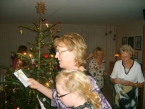
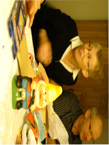
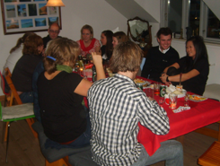

Back in business
Well... January is well underway and I’m back in Germany after a couple of weeks in Denmark over christmas. For christmas I went to northern Jutland to visit some family with my parents and brother. We were only there for around 24 hours, but it was really nice to see the family - I think it has been like 6 months or so.

We had a lot of excellent traditional danish food and some beers, wine and snaps with that - I love danish traditions;) Christmas eve we went around the christmas tree and exchanged presents. I got a lot of cool stuff, among this a new camera - really cool - so I hope that there will be a lot more cool pics in the future.When we came back to Funen where my parents and parents ‘in law’ live there was no time for me to just sit down and relax. First there was a family lunch at Mette’s parents. It was nice also to see them, now that I was back in DK. We had a ‘package-game’ where I was lucky not to get the ‘hate-present’ which is a 30 cm plastic pixie for the garden, which is really ugly even though it might have enjoyed a year in Germany... well I’m glad I didn’t ‘win’ it - sorry for you Birgit :)

The day after we had christmas lunch at my parents place together with my uncle and ant. We had a lot of food and snaps and people got a bit drunk (read: quite drunk). But it was great seeing them again. Unfortunately my cousins couldn’t come. Especially Nik I haven’t seen for like... 2-3 years so it would be nice to see him again - maybe next year!
At as if it wasn’t enough I had a third lunch with my high school classmates. We still see one another more less twice a year for a summer party and a christmas lunch which is really cool. This year Mette P. (again, which we all really appreciate) held the party and we were quite a lot that showed up. We again ate and drank a lot (yeat another hurray for danish traditions and pork) and had a really good time - Thanks everybody, and hope you were not to bad the next day Bille ;)
After having seen most of the family and many of old friends Mette and I went back to Copenhagen to celebrate new years eve with some other friends. Mette had to work a couple of days during christmas and new years eve, which I then used to do a bit of work and to meet with Jacob and a couple of my friends from University of Copenhagen. New years eve was really great - not a huge monkey-party, but really down to earth with great food and good friends - that’s how it’s suppose to be!

In the beginning of January Mette and I just enjoyed the last days together before I had to go back to Heidelberg. I came back on the 5th and have since then just tried to get into gear again. For some reason I always feel tired and exhausted after a couple of weeks of. This time I however think there was a good reason - it can’t be healthy with so much pork and alcohol in only 14 days!
But eventually I succeeded to get into gear and the work is going great. I have a lot to do since I’m leaving for the states February 7, and since they want me to give a talk there and I have an upcoming IMPRS talk I’m not bored! I’m not sure I’ll have the time to right once more before I leave for ‘The Land of God’, but I’ll try to keep you updated from there.
Cheers & a late happy 2009
Schmidt

Sunday, 18 January 2009